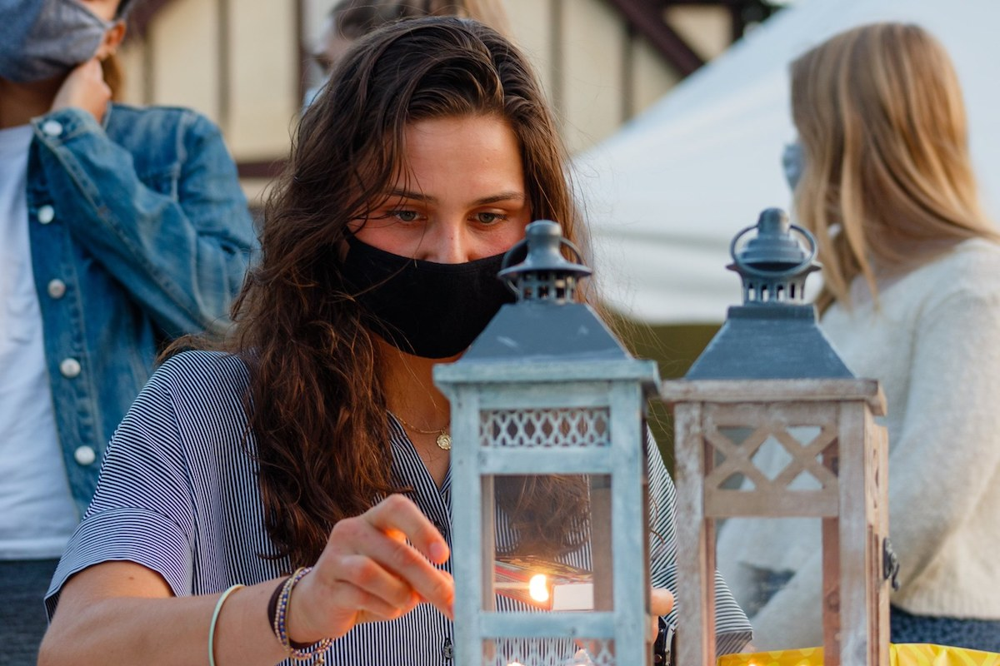

Our Mission
Syracuse Jews is a nonprofit organization that aims to be the warmest home for Jewish students at Syracuse University. Since its establishment in November 2019, Syracuse Jews has hosted countless holiday cobservations, festive meals, prayer services, social events, and insightful classes. Welcome to the place where you can channel your most meaningful Jewish experiences for an even more menaingful college experience!

Making Meaningful College Experiences
Get Connected
Follow more live updates, follow us on Instagram!
@syracusejews
Email us for more information on events, holiady observations, or anything we can do to make life on campus a special moment in your Jewish life.
info@syracusejews.com